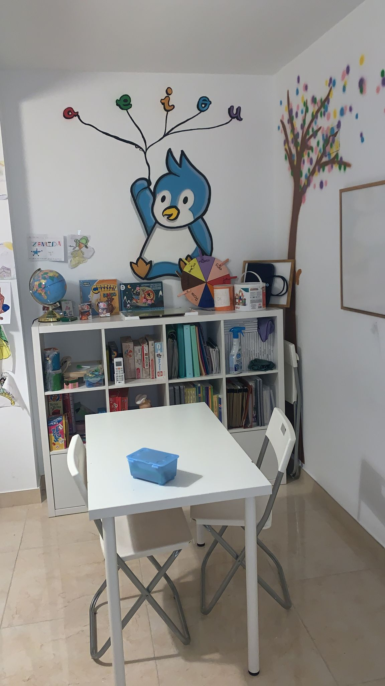
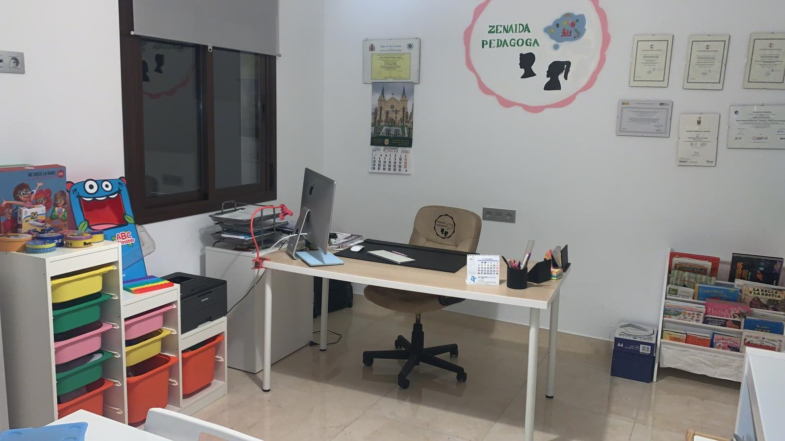
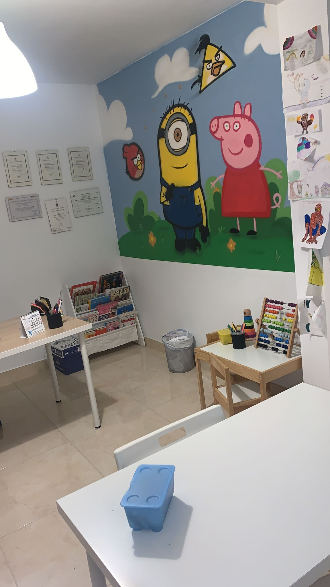

¿Cuándo debería contactar con un profesional?

Como psicopedagoga, puedo ayudar a tu hij@ en temas como:
- Dificultades de Aprendizaje.- Dislexia y/o discalculia.
- Técnicas de estudio.
- Bajo rendimiento académico.
- Reeducación pedagógica.
- Problemas de conducta.
- TDAH.
- TEA.
- Atención temprana.
- Desmotivación.
- Orientación académica.
- Habilidades sociales.
Estas son nuestras instalaciones
Contamos con un aula con un decorado amigable que transmite paz y tranquilidad para hacer sentir a tu pequeñ@ como en casa, porque estar cómod@ es algo fundamental a la hora de aprender.



¿Quién soy?
Zenaida Rodríguez
Desde pequeña el amor a ayudar a las personas ha sido lo que ha definido mi personalidad. Crecí ayudando y aportando desde la edad que me correspondía, y ahí llegó la Pedagogia. Me gradué en el Grado en Pedagogía por la Universidad de Málaga, donde posteriormente hice el Máster en Psicopedagogía, y todo esto hizo cambiar mi forma de entender las necesidades educativas de pequeños y mayores.
Continué especializándome y formándome en todo aquello por lo que sentía curiosidad, ayudando a definirme mejor como profesional. Soy amante de los animales, de los buenos ratos con la familia y amigos y del poder del cariño. ¿Quieres que forme parte de la educación de tu hijo/a? Escríbeme. ¿Nuestro trabajo? Pensar como la persona que tengo enfrente aprende mejor, independientemente de su edad, necesidades y circunstancias.
Continué especializándome y formándome en todo aquello por lo que sentía curiosidad, ayudando a definirme mejor como profesional. Soy amante de los animales, de los buenos ratos con la familia y amigos y del poder del cariño. ¿Quieres que forme parte de la educación de tu hijo/a? Escríbeme. ¿Nuestro trabajo? Pensar como la persona que tengo enfrente aprende mejor, independientemente de su edad, necesidades y circunstancias.